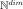
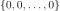
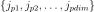
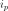
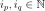
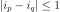
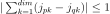
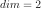
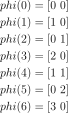

EnumerateFunction¶
-
class
EnumerateFunction(*args)¶ Enumerate function.
See also
LinearEnumerateFunction,HyperbolicEnumerateFunction
Notes
EnumerateFunction represents a bijection from
 to
to

. This bijection is based on a particular procedure of enumerating the set of multi-indices. It begins from the multi-index
.We associate a multi-index

for every integer
in:
For more details, let us consider any

:if

then
. This proposition provides a necessary but unsufficient condition for the construction of the bijection. Another assumption was done indicating the way of iteration. Below an example showing this assumption.Example for

:
For the functional expansion (respectively polynomial chaos expansion), the multi-index represents the collection of degrees of the selected orthogonal functions (respectively orthogonal polynomials). In fact, after the selection of the type of orthogonal functions (respectively orthogonal polynomials) for the construction of the orthogonal basis, the EnumerateFunction characterizes the term of the basis by providing the degrees of the univariate functions (respectively univariate polynomials).
In order to know the degree of the
 polynomial of the
multivariate basis, it is enough to sum all the integers given in the list.
polynomial of the
multivariate basis, it is enough to sum all the integers given in the list.Examples
>>> import openturns as ot >>> enumerateFunction = ot.LinearEnumerateFunction(2) >>> for i in range(6): ... print(enumerateFunction(i)) [0,0] [1,0] [0,1] [2,0] [1,1] [0,2]
Methods
__call__(self, index)Call self as a function.
getClassName(self)Accessor to the object’s name.
getDimension(self)Return the dimension of the EnumerateFunction.
getId(self)Accessor to the object’s id.
getImplementation(self, \*args)Accessor to the underlying implementation.
getMaximumDegreeCardinal(self, maximumDegree)Get the cardinal of indices of degree inferior or equal to a given value.
getMaximumDegreeStrataIndex(self, maximumDegree)Get the index of the strata of degree inferior to a given value.
getName(self)Accessor to the object’s name.
getStrataCardinal(self, strataIndex)Get the number of members of the basis associated to a given strata.
getStrataCumulatedCardinal(self, strataIndex)Get the cardinal of the cumulated strata above or equal to the given strata.
inverse(self, indices)Get the antecedent of a indices list in the EnumerateFunction.
setDimension(self, dimension)Set the dimension of the EnumerateFunction.
setName(self, name)Accessor to the object’s name.
-
__init__(self, \*args)¶ Initialize self. See help(type(self)) for accurate signature.
-
getClassName(self)¶ Accessor to the object’s name.
- Returns
- class_namestr
The object class name (object.__class__.__name__).
-
getDimension(self)¶ Return the dimension of the EnumerateFunction.
- Returns
- dimint,

Dimension of the EnumerateFunction.
- dimint,
-
getId(self)¶ Accessor to the object’s id.
- Returns
- idint
Internal unique identifier.
-
getImplementation(self, \*args)¶ Accessor to the underlying implementation.
- Returns
- implImplementation
The implementation class.
-
getMaximumDegreeCardinal(self, maximumDegree)¶ Get the cardinal of indices of degree inferior or equal to a given value.
- Parameters
- maximumDegreeint
Number of polynoms of the basis.
- Returns
- cardinalint
Cardinal of indices of degree
 .
.
Examples
>>> import openturns as ot >>> enumerateFunction = ot.EnumerateFunction(ot.LinearEnumerateFunction(2)) >>> for i in range(6): ... indices = enumerateFunction(i) ... degree = sum(indices) ... print(str(int(degree))+' '+str(indices)) 0 [0,0] 1 [1,0] 1 [0,1] 2 [2,0] 2 [1,1] 2 [0,2] >>> print(enumerateFunction.getMaximumDegreeCardinal(2)) 6
-
getMaximumDegreeStrataIndex(self, maximumDegree)¶ Get the index of the strata of degree inferior to a given value.
- Parameters
- maximumDegreeint
Degree.
- Returns
- indexint
Index of the strata of degree
.
Examples
>>> import openturns as ot >>> enumerateFunction = ot.EnumerateFunction(ot.LinearEnumerateFunction(2)) >>> for i in [1, 2]: ... indices = enumerateFunction(i) ... strataIndex = sum(indices) + 1 ... print(str(int(strataIndex))+' '+str(indices)) 2 [1,0] 2 [0,1] >>> print(enumerateFunction.getMaximumDegreeStrataIndex(2)) 2
-
getName(self)¶ Accessor to the object’s name.
- Returns
- namestr
The name of the object.
-
getStrataCardinal(self, strataIndex)¶ Get the number of members of the basis associated to a given strata.
- Parameters
- strataIndexint
Index of the strata in the hierarchical basis. In the context of product of polynomial basis, this is the total polynom degree.
- Returns
- cardinalint
Number of members of the basis associated to the strata strataIndex. In the context of product of polynomial basis, this is the number of polynoms of the basis which total degree is strataIndex.
Examples
>>> import openturns as ot >>> enumerateFunction = ot.EnumerateFunction(ot.LinearEnumerateFunction(2)) >>> for i in [3, 4, 5]: ... indices = enumerateFunction(i) ... degree = sum(indices) ... print(str(int(degree))+' '+str(indices)) 2 [2,0] 2 [1,1] 2 [0,2] >>> print(enumerateFunction.getStrataCardinal(2)) 3
-
getStrataCumulatedCardinal(self, strataIndex)¶ Get the cardinal of the cumulated strata above or equal to the given strata.
- Parameters
- strataIndexint
Index of the strata in the hierarchical basis. In the context of product of polynomial basis, this is the total polynomial degree.
- Returns
- cardinalint
Number of members of the basis associated to the strates inferior or equal to strataIndex. In the context of product of polynomial basis, this is the number of polynomials of the basis which total degree is inferior or equal to strataIndex.
Examples
>>> import openturns as ot >>> enumerateFunction = ot.EnumerateFunction(ot.LinearEnumerateFunction(2)) >>> for i in range(6): ... indices = enumerateFunction(i) ... degree = sum(indices) ... print(str(int(degree))+' '+str(indices)) 0 [0,0] 1 [1,0] 1 [0,1] 2 [2,0] 2 [1,1] 2 [0,2] >>> print(enumerateFunction.getStrataCumulatedCardinal(2)) 6
-
inverse(self, indices)¶ Get the antecedent of a indices list in the EnumerateFunction.
- Parameters
- multiIndexsequence of int
List of indices.
- Returns
- antecedentint
Represents the antecedent of the multiIndex in the EnumerateFunction.
Examples
>>> import openturns as ot >>> enumerateFunction = ot.EnumerateFunction(ot.LinearEnumerateFunction(2)) >>> for i in range(6): ... print(str(i)+' '+str(enumerateFunction(i))) 0 [0,0] 1 [1,0] 2 [0,1] 3 [2,0] 4 [1,1] 5 [0,2] >>> print(enumerateFunction.inverse([1,1])) 4
-
setDimension(self, dimension)¶ Set the dimension of the EnumerateFunction.
- Parameters
- dimint,
Dimension of the EnumerateFunction.
- dimint,
-
setName(self, name)¶ Accessor to the object’s name.
- Parameters
- namestr
The name of the object.